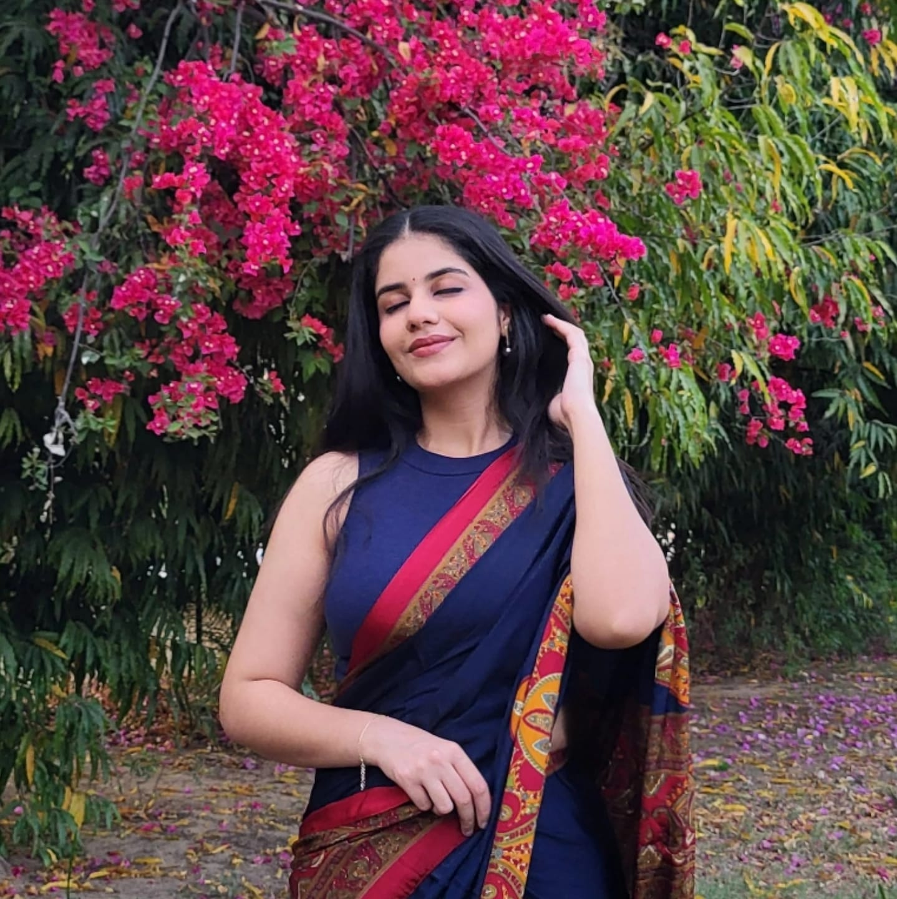
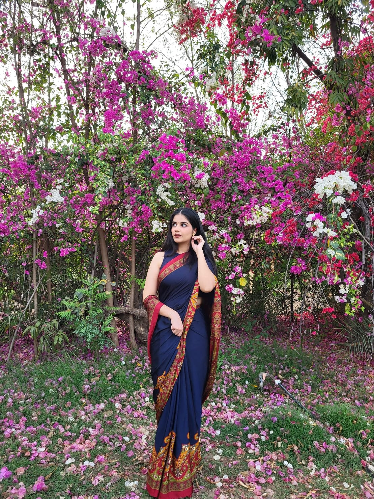

Life Sciences Researcher | Bench to Bioinformatics
Master's student exploring how computational tools and wet-lab work can come together to understand life sciences.
I'm a Master's student in Life Sciences with a specific focus on hepatocellular carcinoma, from CRISPR delivery bottlenecks in fibrotic liver tissue to computational discovery of surface targets like CD133. My thesis investigated why gene-editing payloads fail to reach tumour cells in cirrhotic microenvironments, and that question has shaped everything since.
My path has been bench-first: oxidative stress assays and hypoxia models at DRDO, hepatic scaffold design and CRISPR proposals at IIT Madras. But the datasets kept raising questions a pipette couldn't answer, so I taught myself Python and R, built survival analysis pipelines on TCGA-LIHC data, and used differential expression to hunt for druggable targets. The pivot from wet lab to computational biology wasn't planned. It followed the science.
This dual fluency, wet lab technique and computational analysis, is what I bring to every project. I'm as comfortable optimizing an assay protocol as I am writing a survival analysis pipeline, and I think the most interesting research happens when you can move between both.
The liver is one of the most underestimated organs in the body. It regenerates, it detoxifies, it manufactures. And when hepatocellular carcinoma takes hold, it exploits the very machinery that makes the liver remarkable. That contradiction is what pulled me in. My thesis on CRISPR delivery for HCC taught me something I didn't expect: the real bottleneck isn't the gene-editing tool itself, it's getting the payload past a scarred, fibrotic microenvironment. The interesting problems are rarely where you first assume they'll be.
I started at the bench. At DRDO, I was running oxidative stress assays and processing tissue from hypoxia models. At IIT Madras, I was designing hepatic scaffolds in CAD and writing CRISPR proposals. Somewhere along the way, I realised that the datasets patients generate hold answers you simply cannot find with a pipette. So I taught myself Python and R, built survival analysis pipelines on TCGA data, and used differential expression to hunt for surface targets like CD133. I didn't plan the pivot from wet lab to computational biology. It just followed the questions.
The questions I keep coming back to are translational ones. You find a gene that's screaming in a volcano plot, but then what? How do you go from a statistically significant hit in a microarray to something a clinician can actually use? How do you validate a target computationally and then prove it works in a living system? That gap between discovery and treatment is where I want to spend my time.
C-index 0.671 | Validated in 3 external cohorts (n=568)
C-index 0.700 | Validated in 4 external cohorts
LASSO-Cox model trained on TCGA-LIHC (n=365), validated in 3 external cohorts (n=568). C-index 0.671. Connects high-altitude adaptation genes to tumour hypoxia and overall survival.
LASSO-Cox model identifying ferroptosis-related genes predictive of HCC survival. C-index 0.700, validated across 4 independent cohorts including ICGC. Includes immune infiltration and drug sensitivity analyses.
This schematic summarizes the core finding of this thesis: in hepatocellular carcinoma arising in fibrotic/cirrhotic liver, the dominant limitation for CRISPR therapeutics is not intrinsic editing performance but payload accessibility to target hepatocytes/tumour cells.
Designing hepatic scaffolds and CRISPR proposals. A summer spent engineering the future of liver tissue with stem cells and CAD.
Investigating high-altitude stress adaptations at India's premier defense physiology institute. From in vivo studies to assay optimization, validating critical acclimatization protocols.
Built a Python survival pipeline on TCGA-LIHC data (n=372). HIF1A overexpression trends toward worse overall survival (p = 0.055). Kaplan-Meier curves, hazard ratios, and full analysis inside.
Analyzed 115 HCC patient samples (GSE76427) using R/Limma. Identified CD133 (PROM1) as significantly upregulated in tumour tissue. Volcano plot, boxplot validation, and code inside.
What do Tibetan highlanders and liver tumour cells share? A surprising overlap in hypoxia genes, and it might predict who survives cancer.
Read More →Remove 70% of it and it grows back in weeks. The Greeks accidentally got the science right 2,500 years ago. But there's a cruel twist involving cancer.
Read More →Your cells are pre-programmed to self-destruct when things go wrong. Cancer's entire strategy is learning how to cut the wires.
Read More →Deep-sea romance involves fusing circulatory systems and dissolving your own face.
We can rewrite DNA and build mRNA vaccines. Rhinovirus still wins every winter.
I'm always excited to discuss research opportunities, collaborations, or simply chat about the fascinating world of life sciences.
isha.s.chhikara316@gmail.com
Banasthali Vidyapith
(Department of Bioscience and Bio-Technology)